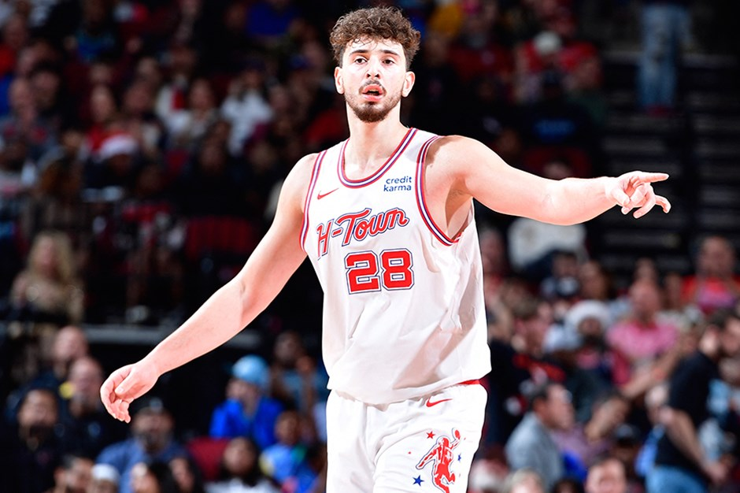

NBA'de Alperen Şengün'ün 22 sayısı Rockets'a yetmedi.
NBA'da milli oyuncu Alperen Şengün'ün forma giydiği Houston Rockets,deplasmanda Miami Heat'e 120-113 yenildi.
NBA'da milli oyuncu Alperen Şengün'ün forma giydiği Houston Rockets,deplasmanda Miami Heat'e 120-113 yenildi.
Pandemi nedeniyle ertelenen, ancak heyecanından hiçbir şey kaybetmeyen 2020-2021 sezonunda şampiyonluk Anadolu Efes’in oldu. Köln’de düzenlenen Final Four’da yarı finalde CSKA Moskova karşılaşmasından galibiyetle ayrılan Anadolu Efes, 30 Mayıs’ta FC Barcelona’yla karşılaştığı final maçını da 86-81 kazandı. Böylece tarihinin ilk Euroleague şampiyonluğuna ulaştı. Zaferin ardından basın toplantısında konuşan Ergin Ataman, "Tüm Türkiye bizi seyrediyorsunuz biliyorum. Sözümüzde durduk. Herkese, Türk halkına armağan olsun. Tüm Türk şehitlerine herkese armağan olsun. Kazanacağız dedik, aldık bu kupayı!" dedi. Tarih yazan Anadolu Efes Spor Kulübünü tüm kalbimizle kutluyoruz
Ve müthiş heyecan sona erdi. 2023 NBA şampiyonu belli oldu. NBA finalinde Miami Heat'i 94-89'luk skorla mağlup eden Denver Nuggets seride durumu 4-1'e getirdi. böylece Denver Nuggets, NBA tarihindeki ilk şampiyonluğa ulaştı. Denver Nuggets (104-93) Miami Heat Denver Nuggets (108-111) Miami Heat Denver Nuggets (109-94) Miami Heat Denver Nuggets (108-95) Miami Heat Denver Nuggets (94-89) Miami Heat
Play-offlarda en çok sayı bulan oyuncu, Play-offlarda en çok asist yapan oyuncu ve Play-offlarda en çok ribaund alan oyuncu olmayı başaran Nikola Jokic haklı olarak Finallerin MVP'si seçildi.
LeBron James'in 25 sayı, 8 ribaunt ve 7 asistle oynadığı maçta Los Angeles Lakers, Los Angeles Clippers'ı 106-103 yendi.
Amerikan Basketbol Ligi'nde (NBA) Los Angeles Lakers, all-star yıldızı LeBron James'in öne çıktığı maçta Los Angeles Clippers'ı 106-103 mağlup etti.
Mücadelenin en skorer ismi olan James 25 sayı, 8 ribaunt ve 7 asist, Anthony Davis 22 sayı, 10 ribaunt ve 1 asistle galibiyete katkı verdi. Clippers'ta Paul George ve Ivica Zubac'ın 22'şer, Kawhi Leonard ve James Harden'ın 15'er sayılık katkıları mağlubiyeti önleyemedi.
Türkiye Sigorta Basketbol Süper Ligi'nde haftanın kapanış maçında Fenerbahçe Beko, Galatasaray Nef'i 86-64 yendi.
Karşılaşmanın ilk beş dakikasında Fenerbahçe Beko, iyi bir oyun sergileyen Pierre ve İsmet Akpınar ile bulduğu üç sayılık basketlerle 8 sayılık fark yakaladı: 15-7. Etkili oynamaya devam eden sarı-lacivertliler, Motley'in de 6 sayıyla ilk periyodu 11 sayı farkla 24-13 önde tamamladı.
kinci periyotta ev sahibi ekipte bu kez Tarık Biberovic üç sayılık basketleriyle skora katkı sağladı. Mcintyre ile etkili olmaya çalışan rakibine izin vermeyen Fenerbahçe Beko, ikinci periyodun ilk yarısında 17 sayılık farka ulaştı: 35-18. Calathes'in asistleri, Melih Mahmutoğlu'nun üç sayılık basketleri ve Motley'in de pota altı sayılarıyla sarı-lacivertliler, farkı 23 sayıya kadar (47-24) çıkardı ve ilk yarıyı 47-25 önde kapattı. Fenerbahçe Beko, üçüncü periyotta da iyi oyununu sürdürdü. İsmet Akpınar ve Pierre'nin üç sayılık basketleriyle periyodun bitimine 5 dakika 15 saniye kala 27 sayılık fark (58-31) yakalayan sarı-lacivertliler, bu çeyreği de 63-45'lik skorla üstün geçti.
Son periyotta sarı-kırmızılı ekip, Sadık Emir Kabaca ve McGee ile bulduğu basketlerle ilk 5 dakikada farkı 17 sayıya kadar (74-57) düşürdü. Sonraki bölümde Şehmus Hazer ve Samet Geyik'le sayılar bulan Fenerbahçe Beko, salondan 86-64 galip ayrıldı. Fenerbahçe Beko: 86 - Galatasaray Nef: 64
Amerikan Basketbol Ligi'nde (NBA) Los Angeles Clippers, all-star oyuncusu Kawhi Leonard'ın sözleşmesini uzattı. Los Angeles ekibinden yapılan açıklamada, 32 yaşındaki ABD'li basketbolcuyla yeni sözleşme imzalandığı duyuruldu.
ABD basınında Leonard'ın 3 yıllık sözleşme karşılığında 152,4 milyon dolar kazanacağı öne sürüldü. Kariyerinde 2 NBA şampiyonluğu yaşayan ve 5 kez all-star seçilen skorer oyuncu, San Antonio Spurs ve Toronto Raptors formaları giydikten sonra 2019'da Clippers'a imza atmıştı.
Leonard, NBA'de bu sezon maç başına 23,8 sayı, 6,1 ribaunt ve 3,4 asist ortalamaları yakaladı.